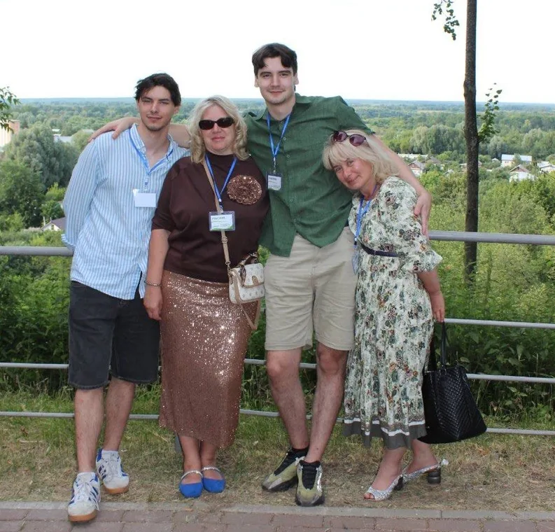

Мы любим математику — и хотим, чтобы её полюбили дети
Котоматику придумали два человека, которым хочется преподавать математику по-другому: в своём стиле, без страха ошибиться и так, чтобы на занятиях было комфортно и ученику, и родителям.

Основатели
Мы — Егор и Иван. Оба учились в МГТУ им. Н. Э. Баумана, оба давно преподаём и оба однажды поняли, что математику можно объяснять иначе, чем многие привыкли: живо, спокойно и через понимание, а не через зубрёжку.
Влюбить в математику — и научить думать
Нам действительно нравится, когда у ребёнка «щёлкает» и задача, которая пугала, вдруг становится понятной. Ради этого мы и работаем.
Чтобы математика нравилась
Когда ребёнку интересно и не страшно ошибиться, он сам тянется к задачам. Интерес — лучший двигатель прогресса.
Чтобы развивалось мышление
Учим не заучивать, а рассуждать: проверять себя, искать доказательство, сомневаться и находить ошибку. Это критическое мышление, которое пригодится далеко за пределами математики.
Чтобы задача превращалась в образ
Помогаем «увидеть» задачу: нарисовать, представить, связать с тем, что уже знаешь. Образное мышление делает сложные темы понятными.
А главное — чтобы и дальше всё получалось: в школе, на экзаменах и в любой задаче, где нужно подумать.
Нас пока мало кто знает
Мы — небольшая школа. У нас нет огромных рекламных бюджетов, громкого имени и билбордов, поэтому о нас пока знают в основном по рекомендациям.
Зато у небольшой школы есть свои плюсы: мы знаем каждого ученика по имени, сами подбираем ему преподавателя и сами отвечаем за результат. Если что-то идёт не так — вы говорите напрямую с нами.
Если вам у нас понравится, расскажите о нас знакомым. Для небольшой школы это лучшая поддержка.
Как мы работаем
Структура помогает не теряться в процессе и понимать, зачем нужен каждый следующий шаг.
Знакомимся
Определяем уровень и цель занятий.
Находим пробелы
Понимаем, какие темы мешают двигаться дальше.
Составляем маршрут
Выстраиваем понятный план обучения.
Видим рост
Фиксируем прогресс и корректируем маршрут.
Попробуйте одно занятие
Расскажите класс и задачу ребёнка — на бесплатном первом уроке познакомимся, определим текущую ситуацию и предложим подходящий формат.